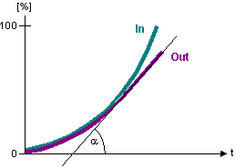
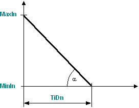
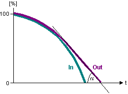
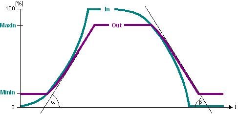

[RATE_LIM] Rate-of-change limitation
RATE_LIM limits the rate of change and the minimum and maximum values of the input signal.
Functioning
The function calculates and limits the rate of change as follows:
Signal increase
Max. rate of change on signal increase = [MaxIn] - [MinIn] / [TiUp]

If the input signal [In] exceeds the maximum rate of change on signal increase, the rate of change for the output signal [Out] is limited. The output value [Out] thus only increases in a linear manner.

Signal decrease
Max. rate of change on signal decrease = [MaxIn] - [MinIn] / [TiDn]

If the input signal [In] exceeds the maximum rate of change on signal decrease, the rate of change for the output signal [Out] is exceeded. The output value [Out] thus only decreases in a linear manner.

Minimum and maximum values
[MinIn] and [MaxIn] limit the output value [Out].

Minimum value:
If input value [In] is smaller than [MinIn], output value is set to [Out] = [MinIn].
Maximum value:
If input value [In] is greater than [MaxIn], output value is set to [Out] = [MaxIn].
Enabling and disabling the function
- When [EnFnct] = 1, the function is switched on.
- When [EnFnct] = 0, the function is switched off. Input [In] is available at output [Out].
Pins
Input | Description | Data type | Default value |
|---|---|---|---|
|
EnFnct | Enable function Enables the function. | Boolean | 1 |
0 - The function is disabled. | |||
|
In | Input | Real | 0.0 |
|
TiUp | Rise time from InMin to InMax Example: Valve rise time. | Time | 0 ms |
0 - No limitation of the signal increase. | |||
|
TiDn | Fall time from InMax to InMin Example: Valve fall time. | Time | 0 ms |
0 - No limitation of the signal decrease. | |||
|
MaxIn | Maximum input signal Defines the maximum output value [Out]. Example: Maximum valve position 100%. | Real | 100.0 [%] |
|
MinIn | Minimum input signal | Real | 0.0 [%] |
Output | Description | Data type | Default value |
|---|---|---|---|
|
Out | Output | Real | 0.0 |
Application
- Adjustment of a manipulated variable to the valve runtime.
- Limitation of the rotational speed of pumps and fans to prevent plant oscillations and to conserve actuators.